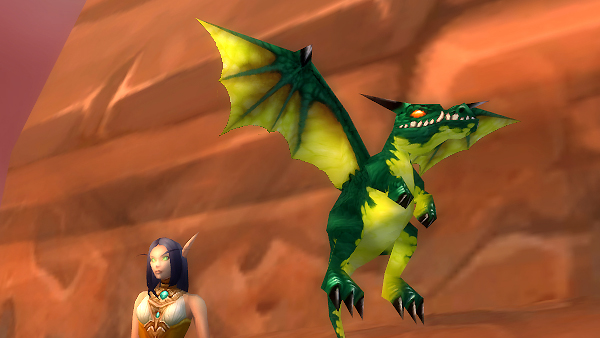
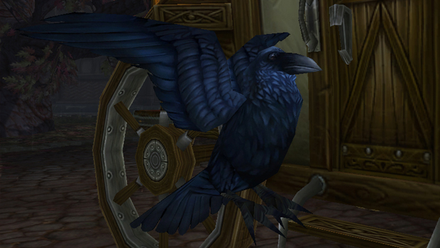
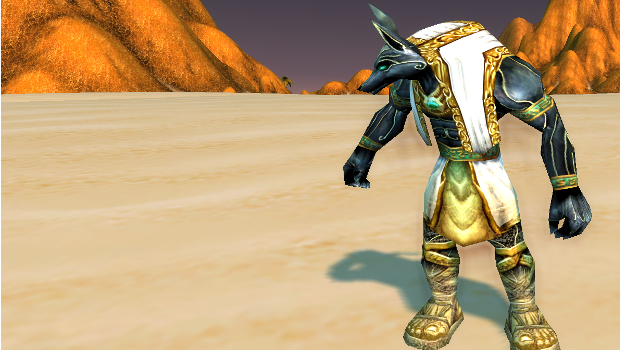
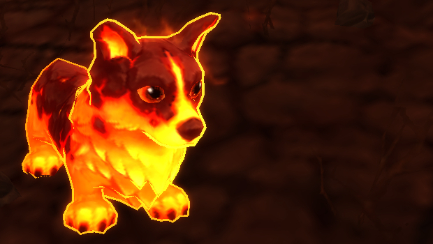
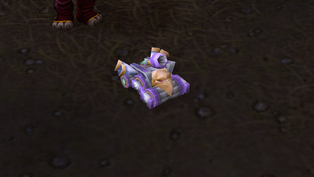

Маленький изумрудный дракончик
Данный питомец вне конкуренции, если дело касается боев с дренорскими PvE-звероводами. Он обладает сильными магическими способностями, которые доминируют в Дреноре, а также хорошим исцелением. Его щит, накладываемый при каждой атаке «Властью изумруда», был проклятьем для звероводов Пандарии.
Гилнеасский ворон
Самый первый убийца водных петов. Умение «Ночной удар», наносит тонны урона независимо от типа питомца. Добавьте «Призыв тьмы» и вы сможете расправиться даже со столь надоедливыми командами черепах. Также можно приручить ворону на ярмарке Новолуния для получения тех же способностей.
Механический пандаренский дракончик

Это рукотворное чудо тем дороже, чем дальше мы от Пандарии. По факту он единственный механический питомец, уверенно владеющий способностями драконов, и прекрасно проявляет себя в роли убийцы магических петов, хотя его живучесть также делает его прекрасным выбором против некоторых дренорских звероводов.
Фигурка Анубисата
Фигурка Анубисата была довольно популярной с момента своего появления в игре. Она обладает очевидным уклонением в лице «Отклонения», щитом за удар от «Каменной кожи» и «Песчаной бурей», дающей групповой щит, который обычно упрощает поддержание низкоуровнего пета в бою 2v2, для получения большего количества опыта.
Пылающий корги / Зловещая репка
«Ослабляющий удар» и «Суперлай» жизненно важны для создания остального зверинца, особенно в ситуации, когда начинаешь сверху, используя «Идеальный тренировочный камень для питомцев».
Паровой танк ярмарки Новолуния
Паровой танк является очень эффективным ДД механического типа. Его очень легко заполучить, когда в городе находится фея. Он имеет одинаковые навыки со смотрителем зверинца, который дропается в Каражане — но это на случай, если у вас есть желание фармить его весь оставшийся месяц.